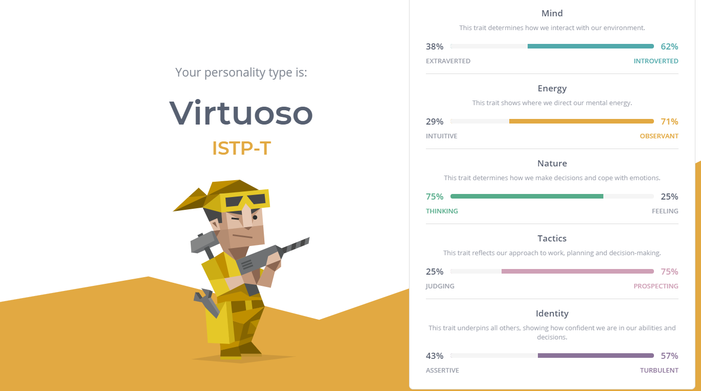
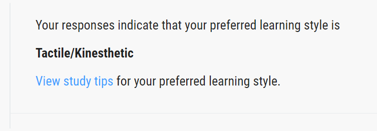
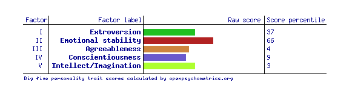

I always believe that these kinds of personality tests should be taken with a grain of salt since they can't be accurate at depicting what you act like and your strengths and weaknesses but if they are to believe all three tests i've taken could have valuable personal learning and personality attributes. Being an ASTP-A according to my 16 personality quiz it means that I'm rational, spontaneous and relaxed whilst also being optimistic. According to my 5 personality test which tells you what your personality most reflects tells me that I am an emotionally stable person first of all. Finally the learning style test showed that my preferred learning style is Tactile or kinesthetic.

These results could influence me to work certain ways within a team. For example, according to my personality quiz I'm an ASTP-A meaning that when working within a team I would be very suited for prioritising tasks as that is apparently a strength that my personality type has. But also according to that personality type I will also be stubborn so when working with a team I'd have to focus on being open minded. When working in high stress situations in a team environment I will be able to keep a cool and level headed thought train according to my personality type as well as Big 5 personality type. So in moments of high pressure I should be helping the team focus and prevent unwanted and unneeded distractions.
Taking these personal qualities into consideration when forming a team will be imperative for smooth operations and collaborative working. When looking for team members I would need to find individuals who are engaged and interested as well as energetic because according to my 16 personality I am energetic meaning that my team would hopefully match that trait. Although a weakness that I would have would be that I'm insensitive and tend to take risks so I'd need teammates who would not hesitate to keep me in check when doing something reckless.
Sources:
16personalities.com. (2011). Your Profile | 16Personalities. [online] Available at: https://www.16personalities.com/profile [Accessed 9 Aug. 2021].
“Big Five Personality Test” 2019, Openpsychometrics.org, viewed 9 August 2021,
SOAR Learning, Inc 2021, “Learning Style Self-Assessment,” How-to-study.com, viewed 9 August 2021,
Image source:
“50 Unique Tessellation Patterns Vector Backgrounds for FREE” 2019, DealFuel, viewed 15 August 2021,